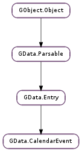

| static | new(id) |
| add_person(who) | |
| add_place(where) | |
| add_time(when) | |
| get_anyone_can_add_self() | |
| get_edited() | |
| get_guests_can_invite_others() | |
| get_guests_can_modify() | |
| get_guests_can_see_guests() | |
| get_original_event_details() | |
| get_people() | |
| get_places() | |
| get_primary_time() | |
| get_recurrence() | |
| get_sequence() | |
| get_status() | |
| get_times() | |
| get_transparency() | |
| get_uid() | |
| get_visibility() | |
| is_exception() | |
| set_anyone_can_add_self(anyone_can_add_self) | |
| set_guests_can_invite_others(guests_can_invite_others) | |
| set_guests_can_modify(guests_can_modify) | |
| set_guests_can_see_guests(guests_can_see_guests) | |
| set_recurrence(recurrence) | |
| set_sequence(sequence) | |
| set_status(status) | |
| set_transparency(transparency) | |
| set_uid(uid) | |
| set_visibility(visibility) |
| Name | Type | Flags | Description |
|---|---|---|---|
| anyone-can-add-self | bool | r/w | Indicates whether anyone can invite themselves to the event. |
| edited | int | r | The last time the event was edited. |
| guests-can-invite-others | bool | r/w | Indicates whether attendees may invite others. |
| guests-can-modify | bool | r/w | Indicates whether attendees may modify the original event. |
| guests-can-see-guests | bool | r/w | Indicates whether attendees can see other people invited. |
| original-event-id | str | r | The event ID for the original event. |
| original-event-uri | str | r | The event URI for the original event. |
| recurrence | str | r/w | Represents the dates and times when a recurring event takes place. |
| sequence | int | r/w | The revision sequence number of the event. |
| status | str | r/w | The scheduling status of the event. |
| transparency | str | r/w | How the event is marked as consuming time on a calendar. |
| uid | str | r/w | The globally unique identifier (UID) of the event. |
| visibility | str | r/w | The event’s visibility to calendar users. |
None
| Name | Type | Access |
|---|---|---|
| parent | GData.Entry | r |
Bases: GData.Entry
All the fields in the GData.CalendarEvent structure are private and should never be accessed directly.
| Parameters: | id (str or None) – the event’s ID, or None |
|---|---|
| Returns: | a new GData.CalendarEvent ; unref with GObject.Object.unref () |
| Return type: | GData.CalendarEvent |
Creates a new GData.CalendarEvent with the given ID and default properties.
| Parameters: | who (GData.GDWho) – a GData.GDWho to add |
|---|
Adds the person who to the event as a guest (attendee, organiser, performer, etc.), and increments its reference count.
Duplicate people will not be added to the list.
| Parameters: | where (GData.GDWhere) – a GData.GDWhere to add |
|---|
Adds the place where to the event as a location and increments its reference count.
Duplicate places will not be added to the list.
| Parameters: | when (GData.GDWhen) – a GData.GDWhen to add |
|---|
Adds when to the event as a time period when the event happens, and increments its reference count.
Duplicate times will not be added to the list.
Note: GData.CalendarEvent.add_time () and GData.CalendarEvent.set_recurrence () are mutually exclusive, as the server doesn’t support positive exceptions to recurrence rules. If recurrences are required, use GData.CalendarEvent.set_recurrence (). Note that this means reminders cannot be set for the event, as they are only supported by GData.GDWhen. No checks are performed for these forbidden conditions, as to do so would break libgdata’s API; if both a recurrence is set and a specific time is added, the server will return an error when the GData.CalendarEvent is inserted using GData.Service.insert_entry ().
| Returns: | True if anyone can add themselves as an attendee to the event, False otherwise |
|---|---|
| Return type: | bool |
Gets the GData.CalendarEvent :anyone-can-add-self property.
| Returns: | the UNIX timestamp for the time the event was last edited, or -1 |
|---|---|
| Return type: | int |
Gets the GData.CalendarEvent :edited property. If the property is unset, -1 will be returned.
| Returns: | True if attendees can invite others to the event, False otherwise |
|---|---|
| Return type: | bool |
Gets the GData.CalendarEvent :guests-can-invite-others property.
| Returns: | True if attendees can modify the original event, False otherwise |
|---|---|
| Return type: | bool |
Gets the GData.CalendarEvent :guests-can-modify property.
| Returns: | True if attendees can see who’s attending the event, False otherwise |
|---|---|
| Return type: | bool |
Gets the GData.CalendarEvent :guests-can-see-guests property.
| Return type: | event_id: str, event_uri: str |
|---|
Gets details of the original event, if this event is an exception to a recurring event. The original event’s ID and the URI of the event’s XML are returned in event_id and event_uri, respectively.
If this event is not an exception to a recurring event, event_id and event_uri will be set to None. See GData.CalendarEvent.is_exception () to determine more simply whether an event is an exception to a recurring event.
If both event_id and event_uri are None, this function is a no-op. Otherwise, they should both be freed with GLib.free ().
| Returns: | a GLib.List of GData.GDWho s, or None |
|---|---|
| Return type: | [GData.GDWho] |
Gets a list of the people attending the event.
| Returns: | a GLib.List of GData.GDWhere s, or None |
|---|---|
| Return type: | [GData.GDWhere] |
Gets a list of the locations associated with the event.
| Returns: | True if there is only one time period associated with the event, False otherwise |
|---|---|
| Return type: | bool, start_time: int, end_time: int, when: GData.GDWhen |
Gets the first time period associated with the event, conveniently returning just its start and end times if required.
If there are no time periods, or more than one time period, associated with the event, False will be returned, and the parameters will remain unmodified.
| Returns: | the event recurrence patterns, or None |
|---|---|
| Return type: | str |
Gets the GData.CalendarEvent :recurrence property.
| Returns: | the event’s sequence number |
|---|---|
| Return type: | int |
Gets the GData.CalendarEvent :sequence property.
| Returns: | the event status, or None |
|---|---|
| Return type: | str |
Gets the GData.CalendarEvent :status property.
| Returns: | a GLib.List of GData.GDWhen s, or None |
|---|---|
| Return type: | [GData.GDWhen] |
Gets a list of the time periods associated with the event.
| Returns: | the event transparency, or None |
|---|---|
| Return type: | str |
Gets the GData.CalendarEvent :transparency property.
| Returns: | the event’s UID, or None |
|---|---|
| Return type: | str |
Gets the GData.CalendarEvent :uid property.
| Returns: | the event visibility, or None |
|---|---|
| Return type: | str |
Gets the GData.CalendarEvent :visibility property.
| Returns: | True if the event is an exception, False otherwise |
|---|---|
| Return type: | bool |
Determines whether the event is an exception to a recurring event. If it is, details of the original event can be retrieved using GData.CalendarEvent.get_original_event_details ().
| Parameters: | anyone_can_add_self (bool) – True if anyone can add themselves as an attendee to the event, False otherwise |
|---|
Sets the GData.CalendarEvent :anyone-can-add-self property to anyone_can_add_self.
| Parameters: | guests_can_invite_others (bool) – True if attendees can invite others to the event, False otherwise |
|---|
Sets the GData.CalendarEvent :guests-can-invite-others property to guests_can_invite_others.
| Parameters: | guests_can_modify (bool) – True if attendees can modify the original event, False otherwise |
|---|
Sets the GData.CalendarEvent :guests-can-modify property to guests_can_modify.
| Parameters: | guests_can_see_guests (bool) – True if attendees can see who’s attending the event, False otherwise |
|---|
Sets the GData.CalendarEvent :guests-can-see-guests property to guests_can_see_guests.
| Parameters: | recurrence (str or None) – a new event recurrence, or None |
|---|
Sets the GData.CalendarEvent :recurrence property to the new recurrence, recurrence.
Set recurrence to None to unset the property in the event.
Note: GData.CalendarEvent.add_time () and GData.CalendarEvent.set_recurrence () are mutually exclusive. See the documentation for GData.CalendarEvent.add_time () for details.
| Parameters: | sequence (int) – a new sequence number, or 0 |
|---|
Sets the GData.CalendarEvent :sequence property to the new sequence number, sequence.
| Parameters: | status (str or None) – a new event status, or None |
|---|
Sets the GData.CalendarEvent :status property to the new status, status.
Set status to None to unset the property in the event.
| Parameters: | transparency (str or None) – a new event transparency, or None |
|---|
Sets the GData.CalendarEvent :transparency property to the new transparency, transparency.
Set transparency to None to unset the property in the event.
| Parameters: | uid (str or None) – a new event UID, or None |
|---|
Sets the GData.CalendarEvent :uid property to the new UID, uid.
Set uid to None to unset the property in the event.
| Parameters: | visibility (str or None) – a new event visibility, or None |
|---|
Sets the GData.CalendarEvent :visibility property to the new visibility, visibility.
Set visibility to None to unset the property in the event.